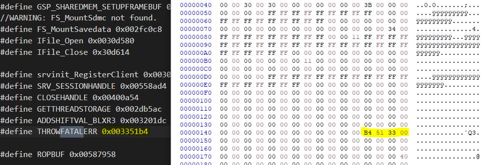

Hacking The 3ds V: Part 1
Introduction - Part 1
Everything comes to an end, and so does the 3DS series. In this first part I’ll pave the way to go through the whole exploit chain that leads to native code execution in the ARM11 and ARM9 processors of the Nintendo 3DS. A successful example of black-box hacking, reversing and exploiting.

The strategy to follow is:
- Use a hardware attack on DS Mode Hardware
- Get unsigned code execution on the DS Mode
- Find a 3DS vulnerability that can be triggered from the sandbox + Use a hardware attack on the 3DS hardware to get insight of the software running in 3DS Mode
PART2: ARM11 in detail + Exploit a vuln in the ARM9 code
1. Hardware Interface
In the last post, I explained the different hardware attacks that could be used against the DS and the 3DS hardware. The EEPROM emulator interface was the one I highlighted and the one I was working to replicate.
Interestingly I came to the conclusion that such a setup would be overly complicated for what I wanted to accomplish. To recall, such an attack gave us access to the savegame data stored in a cartridge’s eeprom, allowed us to modify it in a “live” fashion from a PC, and to feed it to the game rapidly.
Speed is the great strength of this attack but, do we really need such facilities? Actually, no. So I decided to give up on an eeprom emulator interface and go for a simpler and slower but equally useful setup. A Nintendo DS cartridge savegame dumper (and injector).
Team Twiizers created a setup which is a full interface but running from an arduino instead of FPGA.
I don’t need to emulate the whole eeprom, it is often enough to be able to read it (dump its contents and analyze them) and write back modified data or backups.
Initially I created a setup using the following hardware I had available:
- Altera DE1 FPGA
- Spare Nintendo DS cart header. I bought one for less than $3 on ebay, it can also be obtained from broken consoles.
- Jumper wires, soldering iron, and related equipment.
- A computer
Unfortunately the complexity of hardware design and synthesis has prevented me from finishing this device. While the code is almost functional, I still have to solve a clock domain crossing problem, which requires more learning of vhdl, fpgas, and FIFOs. Thus, I replaced the FPGA with a cheap and well-known Arduino UNO board.
Firstly, let’s see how we can build one of these devices from scratch, and with the lesser possible previous knowledge. My first step was to disassembly a Nintendo DS cartridge I had lying around to see what was inside:

We can quickly identify 2 chips. The smaller one must be the EEPROM containing the savegame, and the bigger one must be the ROM, which can store more data and contains the game’s code, resources, etc.
Let’s focus on the EEPROM. Looking closely, we can see some numbers and a more or less visible logo.
5512 WP
And the logo from ST Microelectronics. We now know where to look for the eeprom’s datasheet. If we search in the product list of ST, we cannot find an exact match for “5512 WP”. But the M95512-W seems to be a good deal. According to my friend @nitehack this can be due to manufacturers shorting the name’s on their chips.
By downloading the datasheet I could confirm all assumptions about the chips, as comparing the information with the one in gbatek (A nintendo ds internals kind of wiki, created by no$cash) showed that the commands are the same.
Before moving to FPGA development, an important consideration. It would be impractical to desolder and solder again the eeprom each time we want to modify its contents. Therefore, I have used a multimeter to investigate which pins from the eeprom are connected to the cartridge pins, and I connect the cartridge to the spare cart adapter, which exposes its pins for easier soldering:

To interface with the EEPROM we use the SPI protocol which requires 6 lines:
- Vcc: voltage supply
- GND: ground line
- MOSI: Master Out Slave In -> The line our FPGA/Arduino uses to send bits
- MISO: Master In Slave Out -> The line our FPGA/Arduino uses to receive bits
- CS: Chip Select
- CLK: Clock Line
These eeprom pins get mapped to the following cart slot pins:

- 2: CLK
- 6: CS
- 8: VCC
- 15: MISO
- 16: MOSI
- 17: GND
Once we are done understanding the hardware, it is time to understand the underlying protocol. The datasheet explains most of the commands we need and they are the same that are listed in gbatek.
Dumping
Let’s start by implementing the eeprom dump. We need to read the chip’s contents. This is the command to initiate a READ
READ | Read from Memory Array | 0000 0011
This is a 1-byte opcode. The byte is 0x03. And the whole command usage (including the argument which is the eeprom’s 2-byte memory address we want to read) is as follows:
Cmd, addr msb,lsb, read byte(s)
--------- example ------------
0x03 0x00 0x00 -> Read byte at 0x0000
We want to read the whole eeprom. The eeprom is 64kb large and so it has 16bit addresses (2^16 bytes). We will start reading at address 0x0000 and read 64kb. The math is as follows:
$$ 64\text{ Kb} * (\frac{1024\text{ bytes}}{1\text{ Kb}}) * (\frac{8 \text{ bits}}{1 \text{ byte}}) = 524288 \text{ bits to be read} $$
or just
$$ 64\text{ Kb} * (\frac{1024\text{ bytes}}{1\text{ Kb}}) = 65536 \text{ bytes to be read} $$
The eeprom replies with 8 bits (1 byte) of data. Now we just have to repeat this 65536 times, one per byte, to read the whole memory.
It is enough to issue the 0x030000 command once to start reading at the beggining of the memory (address 0x0000) and continue sending clock pulses, as the eeprom will automatically increase the address to read internally. All these details are specified in the datasheet.
Writing
Writing to the eeprom works in a sightly different manner, as we cannot write all the memory at once. We can write up to 128 bytes with a WRITE command, which is one memory page. Immediately afterwards we must issue another WRITE command to write another 128 bytes.
From the Datasheet: In the case of Figure13, Chip select (S) is driven high after the eighth bit of the data byte has been latched in, indicating that the instruction is being used to write a single byte. However, if Chip select (S) continues to be driven low (as shown in Figure14), the next byte of input data is shifted in, so that more than a single byte, starting from the given address towards the end of the same page, can be written in a single internal Write cycle.
Cmd, addr msb,lsb, read byte(s)
--------- example ------------
0x02 0x00 0x00 -> Write byte at 0x0000
In addition, we need a WRITE ENABLE command before every WRITE:
All instructions that modify data must be preceded by a Write Enable (WREN) instruction to set the Write enable bit.
Cmd
--------- example ------------
0x06 0x00 0x00 -> Write Enable
dsaver (arduino version)
I have implemented and open-sourced all the described protocol for the popular Arduino microcontroller (and its clones). With dsaver you can now turn your arduino board into a free and open-source NDS savegame manager!

dsaver running on a windows PC injecting a savegame
You can dump to / inject savegames from any Windows or Linux PC, or whatever device that runs Python3 and has some kind of serial port!:
 Get the code here
Get the code here
We can now read and write (modify) savegames of our cartridges.
2. Nds Mode Code Execution
At this point we have a way to attack Nintendo DS programs: their savegames. The content of the savegames is read and treated by the various games in different ways. I will keep using FIFA08 as a target to test with.
Usually on a zero-knowledge situation we would try to make modifications to the savegame and see how those influence the game. Doing so we find trouble:

Modifying any byte on the save makes this error message appear. Is savedata really damaged?
No, save data is not damaged. But we have modified the contents without patching any integrity checks that could be in place; checksums.
A checksum is a representation of a piece of data that is used to make sure that the data is not corrupt. If we just modify a save file without correcting the necessary checksums, and load it into the game, it will be detected as corrupt, and will be deleted. Usually, DS games use simple functions which we can work out without having to disassemble the ROM. -Cturt
Cturt has an smart blog post explaining about checksums and exploit development on the Nintendo DS here
Henceforth I will not cover in depth all the basic aspects of Nintendo DS savegame exploitation, but I will instead extend on Cturt’s post. He finds a way to compute the savegame checksums without reverse engineering the game’s code, just by comparing and diffing different savegames. Unfortunately for us, in most real scenarios this is not feasible, so I will show another way to reverse this checks: using both dynamic and static reverse engineering.
To be able to do this we need the game’s code. There are several ways to obtain it. It can be dumped from the cartridge’s ROM memory, and as I did with the eeprom it’s just a matter of reversing or finding the protocol used and apply it to communicate with the chip. We’ll assume that we have the game’s code dumped already.
1.1. Reversing
We’ll need dynamic and static reversing tools:
| Static | Dynamic |
|---|---|
| Ghidra / radare2 / IDA Pro | no$gba |
no$gba is a specific Nintendo DS emulator. On blackbox / blind situations, I suggest building your own dynamic disassembler/interpreter tools using capstone and unicorn engine, but the Nintendo DS internals (not the 3DS) have been documented for a while and extensively, since its release in 2006.
The steps to successfully use the dynamic+static reverse engineering combo are:
- (DYNAMIC) Load game and analyse behaviour
- (DYNAMIC) Find a way to identify beginning of target code and set a breakpoint
- (DYNAMIC) See code being executed running step by step
- (STATIC) Goto code address. Disassemble the desired function OR convert it to C by hand.
- Possibly, we will have to deal with compression problems before being able to browse our code in the disassembler
- (STATIC) Extract the piece of code and adapt it to a new C/C++ patcher program.
I will be showing the reversing of FIFA06 EUR as example.
1.1.1 Load Game. Analyze Behaviour
After loading the game in the emulator, let’s play a bit. Set up a nickname easy to locate later on the savegame file, like AAAAAAAA, and save the game. Close the emulator and back up that savegame. Repeat a few times changing single characters of the username, like AAAAAAAB or AAAAAABA. Back up these savegames and let’s compare them.

Two different savegames compared with the bindiff tool. Checksum in red
The 2 bytes in red at the beggining seem to be our checksum, as those 2 bytes change from save to save. Comparing the rest of the file we can observer another checksum for the chunk of data representing “My Football Club” configurations in-game.
1.1.2 Identify Target. Set Breakpoint
Now we need a way to find the code that computes that checksum. I will use some knowledge about how ARM processors work on the assembly level.
//Example function that computes a checksum
int computeChecksum(...)
{
short checksum; //2 bytes variable
//compute checksum logic...
return checksum; //return computed value
}
int main()
{
int calculatedChecksum = computeChecksum(...);
//do other stuff..
return 0;
}
when compiled, produces an assembly code similar to this:
computeChecksum():
00 str fp, [sp, #-4]!
01 add fp, sp, #0
02 sub sp, sp, #12
03 ldrsh r3, [fp, #-6]
04 mov r0, r3
05 add sp, fp, #0
06 ldr fp, [sp], #4
07 bx lr
main:
08 push {fp, lr}
09 add fp, sp, #4
10 sub sp, sp, #8
11 bl computeChecksum()
12 str r0, [fp, #-8]
13 mov r3, #0
14 mov r0, r3
15 sub sp, fp, #4
16 pop {fp, pc}We’ll focus on what happens when the execution flow returns from computeChecksum() to main() and returns a value.
bl computeChecksum()
str r0, [fp, #-8]the bl computeChecksum() instruction branches to the computeChecksum() function. Once the function returns, execution continues on the str r0, [fp, #-8] (store instruction). It places the value in r0 into the memory address resulting from substracting 8 to the address at register fp (frame pointer). This is indeed, asigning the return value, which was in r0, to the variable int calculatedChecksum = computeChecksum(...);.
Key Concept to remember: The ARM standard calling convention specifies that functions that return one value do so by placing that value on the r0 register before returning. Functions with more than one value to return, place the first value in r0 and the next values in r1,r2 and r3. For more than 4 data values to return, those are placed in the stack.
Therefore, we know the real checksum function of the game must return the checksum in r0. This will be the condition for our breakpoint.
Since we have the AAAAAAAB.sav file, we know the value of the checksum of that file. 0xD9B6 In no$gba we can then set a breakpoint like this:
r0 = 0000B6D9Keep in mind the Nintendo DS processor is little endian, thus the checksum 0000D9B6 will be found in memory as 0000B6D9.
Setting this breakpoint and restarting the game will trigger the breakpoint at address 0x01FFD03C and our emulator will pause execution there:

The execution halts here. Notice r0 contains the checksum value
1.1.3 Step the code, understand it, and reuse it!
Our nicely feature-packed debugger has stopped execution at 0x01FFD03C. This is usually one of the last instructions of the function, but we want to see the whole thing. To do so, we’ll go to that address in Ghidra, IDA Pro or any other dissasembler tool you preffer should work too.
Unfortunately, if we try to disassemble the .nds binary we find that the address 0x01FFD03C seems to be out of the memory region or rather not containing any code at all. This is due to compression: game developers of the NDS era used to compress their applications code and unpack them in memory to save space. Therefore, we cannot find the code. The fastest way to find it is to do a memory dump of the emulator’s memory. On no$gba you can do this under Tools > dump to .bin file.
NDS RAM memory starts at 0x01FF8000 and occupies 0x00408000 bytes.
NOTE: This is no longer required for Ghidra, as I released the NTRGhidra plugin which does all for you.
Once dumped, we can actually load the memory dump on the disassembler: set the processor to ARM v5jt little endian without function tails. Now browse to 0x01FFD03C. and…

Voilá! That’s the piece of code we were looking for
This is the assembly of the function. Do not worry! For this example you don’t need to know (arm) assembly (though I found it incredibly useful). Modern disassemblers often include a decompiler: a tool that can conevert assembly code into pseudo-C code, more readable for humans.

Function decompiled by 2 different tools. IDA Pro (left) vs Ghidra (right)
Actually, the IDA Pro decompiled function (in addition to containing some non-standard C/C++ macros/keywords specific to the HexRays decompiler..) did not work properly. On the other side, the Ghidra-decompiled version worked flawlessly when integrated into a simple C++ console program.
You can now just copy the function and try to make it work reading a savegame. Here you have my working tool to patch the savegames of FIFA06:
You can modify the savegame in whatever way, patch it with the tool, and the game will believe it is a perfectly good and legit save 😜
1.2. Exploiting
We can now mess with the contents of the savegame. Any modification that crashes the game might be useful, but remember:
Not all crashes are vulnerabilities nor can be exploited
Nevertheless, it’s certain that there are some well-known places to look for vulnerabilities. It’s the case of strings. Looking at the savegame we immediately notice some of them.

So… wanna know what happens when you change it into a very large string…?
1.2.1 Stack Buffer Overflows
This is a brief explaination of how some memory elements that are stored in the stack, can be overflowed. This is a well-known vulnerability that can allow an attacker to gain control of the execution flow; this means redirecting the flow to his own code. How does it work on the ARM architecture?
Don’t hesitate to skip this part if you already know how basic memory corruption vulnerabilities work.

Consider the image above. The vulnerable program creates an array of characters, char in languages like C and C++, of size 8. Usually an ASCII character ocupies one byte, so let’s assume our array is 8 bytes. In C this array is created like this:
char username[8]; //allocate our array
That would reserve in the stack an array of 8 bytes, that we can access from 0 (first element) to 7 (last element).
We could now set our username as follows:
char username[8]; //allocate our array
username = "PedroJ!\0"; //set our username
In C, if a character array represent a string, it must end up with the NULL byte (0). If you are confused about this, read here. In this case, it means the maximum size for an username should be 7 characters + the null byte.
The code above is valid and safe. But what would happen if some user tried to set his/her username and it were larger than 7 characters?
char username[8]; //allocate our array
username = "PedroJ!AAAAAA\0"; //set our username
This would cause your program to overflow the array and write past it, thus overwritting whatever is past the array. This is the vulnerability. You will learn now that, the stuff that is past the array is important, and by modifying those values, we can take control of the flow of the program and make it jump to our own code!

There are modern protections to prevent these attacks, but the NDS does not have them. We’ll see some later in the 3DS mode and how to overcome them.
ARM processors (I’ll talk about 32 bits processors but this applies to modern ARM64 CPUs) handle procedure calling using the stack. The stack often grows downwards, into smaller memory addresses:
The direction of the growing stack is really not something standard. Both directions exist, but usually arm devices use an upwards growing stack.
Whenever a function is called (if you are familiar with C/C++ you know what a function or procedure is), the program must have a way to know where to return after the function has finished.
int vulnerableFunction()
{
char username[8];
gets(username); //Old and insecure C function
//A big string is going to overwrite stuff past the buffer
return 0;
//goes back to middleFunction()
}
int middleFunction()
{
int number;
number = 99;
vulnerableFunction(); //call the function
number = 70;
return number;
//goes back to main()
}
//The program starts here
int main()
{
middleFunction(); //calls the function
}
This is the flow when calling the function:

And this should be the return of it:

How does the ARM processor remember to what memory address return once a function has ended? Using one of its registers to store the address to return:

The register r14 is also called the link register and its only purpose is to store the address where the code should return after a procedure call. Unfortunately, if we call more than one function in chain, like in the example shown, the link register becomes insufficient.
If we store the address of main() in the lr when calling middleFunction(), but then we overwrite it with the address of middleFunction() when calling vulnerabilityFunction(), the program would lose the address of main() and wouldn’t know where to return! that’s why the ARM standard calling procedure specifies that, if we are going to call more one or more functions, from another function (these are called non-leaf functions), the values of the lr must be placed into the stack for later retrieval. Again, here lies the vulnerability.
If we overwrite the value in the stack that some time later is read into the link register, we can redirect the flow to our own controlled memory address, where our custom code could be waiting. And this way, we take over the processor.
Let’s imagine this is our stack before the overflow happens.
------------------------
---- OUR STACK -------
------------------------
0x02700000 ? (free space)
0x02700001 ? (free space)
0x02700002 ? (free space)
0x02700003 ? (free space)
0x02700004 ? (free space)
0x02700005 255 (stack) <--Stack Pointer(SP)
0x02700006 'P' (stack)
0x02700007 'e' (stack)
0x02700008 'd' (stack)
0x02700009 'r' (stack)
0x0270000A 'o' (stack)
0x0270000B 'J' (stack)
0x0270000C '!' (stack)
0x0270000D '\0' (stack)
0x0270000E 0x207001BC(stack)
0x02700012 0x207001F0(stack)
... ... ...
------------------------
We can deduce that when vulnerabilityFunction() finishes, it restores the value 0x027001bc into the link register (LR), then the value of the Link Register is copied into the Program Counter (PC), If the execution was normal.
After the overflow, it turns up to be this way:
------------------------
---- OUR STACK -------
------------------------
0x02700000 ? (free space)
0x02700001 ? (free space)
0x02700002 ? (free space)
0x02700003 ? (free space)
0x02700004 ? (free space)
0x02700005 255 (stack) <--Stack Pointer(SP)
0x02700006 'P' (stack)
0x02700007 'e' (stack)
0x02700008 'd' (stack)
0x02700009 'r' (stack)
0x0270000A 'o' (stack)
0x0270000B 'J' (stack)
0x0270000C '!' (stack)
0x0270000D '\0' (stack)
0x0270000E 'AAAA' (stack)
0x02700012 'AAAA' (stack)
... ... ...
------------------------
Our progam will now jump to 0x41414141 ! (because ascii character ‘A’ is 0x61 in hex). This will crash the process, as 0x41414141 is an invalid address where there is no code.

We use this vulnerability to redirect the execution to our own code!
Instead of overflowing the return address with 0x41414141 we can replace it with a valid address pointing to a piece of code somewhere in memory (for example on the rest of the stack that we are overflowing).
1.2.2 Stack Buffer Overflows on the NDS
We’ll now apply the concept before to exploit a Nintendo DS game and run unsigned code. Our target is FIFA06 (actually, did you know all Nintendo DS FIFA games are vulnerable?)
We are going to see the savegame again after playing a bit the game.

I created a “custom team” with a name PPPPP...P which you can observe. Its abreviation is 123 which can be seen exactly after the name, separated by a null byte. In the C programming language strings are character arrays which end with a null byte, so lets remove the null byte after PPPP...P and add more characters. In this way, we could cause a buffer overflow!
The game’s code may start reading the string and don’t stop until it finds a null byte, but it was never expecting such a large string so maybe it did not allocate enough memory, hehehe…

Save the file and patch the checksum. Let’s see what happens:

We managed to cause some graphical glitches but the game did not crash.
Therefore, let’s extend the string even more:

Patch and try…

Tadá! Undefined opcode error!?
What does undefined opcode error mean? have we found a vulnerability?
The ‘opcode’ is the encoding, in bytes, of assembly instructions. An instruction like
mov r0, r1could be encoded in memory to something like0x11AA22BB(I just invented this example by the way).
Hence this error says that the processor tried to execute some instruction that is not valid. And if we look at the registers…
r15 (aka PC) = 424141FE
It seems like our console’s processor tried to jump to address 0x424141FE and execute the instruction in there, which of course, was not valid :O indeed this is vulnerable!
Hold up, but why 0x424141FE?
Look carefully at what we used to overflow the string: the A character. Which in ASCII encoding (which is the defacto standard for American/English strings) is 0x41. And B is 0x42. Our A’s and B’s made it into the Program Counter (r15) register, though with some modifications (this is actually caused because the PC is usually +8 bytes ahead of the current instruction). Additionally, 0x41 is not an even number, so it cannot be aligned in memory and the emulator might have modified it sightly.
It’s time to turn this into a working exploit. We need two things:
- some of our code to redirect the execution to.
- the location of that code (the memory address where it starts).
For this demonstration it is trivial to develop both things. The natural is to begin designing some basic code.
nop
nop
nop
sub r15, #8The nop instruction (short for no-operation) is literally an instruction that does nothing. It is encoded (aka: its opcode is) as:
0x00 0xf0 0x20 0xe3 (little endian)
0xe3 0x20 0xf0 0x00 (big endian)
The other is an ARM assembly infinite loop. It substracts 8 to the r15(PC) so it loops indefinitely. Once compiled/encoded it can be expressed as:
0x08 0xf0 0x4f 0xe2 (little endian)
0xe2 0x4f 0xf0 0x08 (big endian)
I used this page to quickly encode some basic instructions, but to ensure the real thing will work I use a cross-compiler targetting with accuracy our architecture. (ARM7, v5, etc)
All together our payload would look like this:

On yellow the NOPs. On green the sub instruction.
We now need to place those 16 bytes in memory somehow. Our savegame, which gets loaded into memory, is the perfect place to sneak our code into the NDS’s memory space. For example I am going to place it here:

Checking if the code has made it into memory and…

Notice those bytes after the long string? That is our code
Could the code have been placed in the middle of the string or even before it? The answer is yes and no. It could have been placed before the beginning of the string without problems. But we would have had problems if we had placed it in the middle. Why? Because the opcodes are composed by at least one null byte 0x00, remember, that marks the end of the string, thus everything after it would have not been overflown into the buffer! Be careful! And investigate, as there are tricks to easily bypass this constraint.
We have the code, and we have it placed in memory, precisely in the address 0x02243B00 (aren’t debuggers nice?)(see picture above). The final step is to place that number, that address, into the PC. But in which place of the laaarge string should we place it? To discover it, we need to change the string to have a unique non-repeating pattern or go probing by hand. For a non-repeating string we need around 200 or 250 bytes. We can use a generator. Metasploit has one, or you can use this online alternative. But for this example I’ll just show you where to place it after I tested a bit by hand.

We are going to replace the XXXX by our code’s starting address.
Triggering the crash again reveals the PC is now, indeed, ‘XXXX’ (58585858) (actually, you see 5858585C which is 58585858 + 4, this is due to the emulator having tried to execute the instruction at 58585858 and then increased the PC by 4, and finally rising an exception due to invalid opcode.

Last step is to replace the address 58585858 with our payload’s address, after placing it, which in this case is 0x02243B00. We proceed to trigger the exploit and observe:

Achieved! Execution enters an infinite loop, our custom test shellcode. We can confirm we can execute whatever unsigned code we want.
Take for granted we can run more complex programs, like this demo:

The exploit runs equally well on the 3DS family of consoles.
3. 3DS Mode Code Execution
The bottom line was getting code execution on the new 3DS CPU, the ARM11, so let’s get down to business.
IMPORTANT: I’m always using an old3ds with firmware 4.4. This is an old firmware so latest security patches are not taken into consideration
3.1. Sandbox Fuzzing
Once we have code execution in Nintendo DS mode, it’s time to find a way to elevate privileges or attack other components of the system.
Code executed in backwards compatibility mode runs in a separate ARM7 processor, like the one on the original Nintendo DS, but we should not know this unless we had decapped the SoC. I find that to be a curious fact, but not vital.
Often devices with multiple ARM processors have mechanisms that allow the different processors to communicate between them. This is sometimes in the form of shared i/o memory. I could research a way to interface from the arm7 with the arm9 or arm11 of the 3DS, though:
- It is quite possible that the arm9 and arm11 no longer listen nor reply to the arm7 commands or instructions once the console has entered in backwards mode. That makes sense and would be a good security practice
- Even though we could interface with the other ARMs, we would need to find a vulnerability or hole to get code execution on those cores, which might be not trivial.
I have discarded this. Instead, notice that there is a 3DS application that interacts with some data obtained from the nds mode. The 3DS System Settings application shows in the screen some Nintendo DS backwards mode information, like the Nintendo DS Profile’s nickname, motto, and the user’s favourite colour. In essence this implies that the code of the System Settings app reads data provided by the backwards mode space (we don’t know where it is stored, in some flash memory? in the nand? it is irrelevant). Hence, we may try to modify that data from the DS mode, and try to cause a failure in the code that is being executed in native mode. Could we cause a stack buffer overflow as we did in DS mode? Let’s see!!
We can change the motto/description value, and it is a string, which is up to 20 characters. This can also be changed from a homebrew, since in the original Nintendo DS everything used to run in the baremetal and this specific fields were stored in a flash memory, unprotected, this means whatever code executes in DS mode is capable of changing the DS username, for example. This settings were saved in a flash memory, and in the 3ds they are likely stored somewhere in some file in the NAND. Either way, the values were reversed and documented for the NDS in gbatek
Here is some interesting information about our possible target:
Addr Size Expl.
000h 2 Version (5) (Always 5, for all NDS/DSi Firmware versions)
002h 1 Favorite color (0..15) (0=Gray, 1=Brown, etc.)
003h 1 Birthday month (1..12) (Binary, non-BCD)
004h 1 Birthday day (1..31) (Binary, non-BCD)
005h 1 Not used (zero)
006h 20 Nickname string in UTF-16 format <------------
01Ah 2 Nickname length in characters (0..10) <------------
01Ch 52 Message string in UTF-16 format <------------
050h 2 Message length in characters (0..26) <------------
052h 1 Alarm hour (0..23) (Binary, non-BCD)
053h 1 Alarm minute (0..59) (Binary, non-BCD)
...
There are two interesting fields:
006h 20 Nickname string in UTF-16 format
This one located at offset 0x006 is 20 bytes in size. It is the Nickname string used in DS mode which is displayed in the 3ds backwards mode!
01Ah 2 Nickname length in characters (0..10)
Located at 0x01A with a size of 2 bytes we find a value that holds the lenght of the nickname…
If you have some knowledge on exploit development then it may have rang a bell. this looks like the classic overflow-able string in the stack, which causes a stack overflow vulnerability! By modifying the length value (increasing it) in ways the programmers does not expect, we can induce some unintended behaviour. I will try to modify it and see if it crashes the console!
For this, I created a ds mode tool called OpenMSET to fuzz the length value, for example, setting it to a very high value.
The Nickname length field is two bytes, so let’s set them to the maximum value possible 0xFF 0xFF:
iprintf("Fuzzing shMessageLength..\n");
workbuffer[0x1A] = 0xFF;
workbuffer[0x1A+0x1] = 0xFF;
iprintf("Fuzzing shMessageLength2..\n");
workbuffer[0x100 + 0x1A] = 0xFF;
workbuffer[0x100 + 0x1A+0x1] = 0xFF;
If you are not familiar with the code of OpenMSET yet: workbuffer is just an array in which we read the firmware stuff from the flash memory into our program. Then it is modified and written again to the flash. In this case, I’m setting bytes 0x1A and 0x1B (two bytes) to the value 0xFF. I’m doing the same at offset 0x100 and 0x101, which is a mirror of the data that the firmware stores. If both copies aren’t equal, it means one may be corrupted, and the data will be considered corrupt, that’s why I’m applying the same modifications twice in different places.
Finally, the NDS firmware uses a very basic checksum to ensure data integrity. It is a CRC16 checksum algorithm, whose code was present in the NDS BIOS and now can be used with libnds homebrew library:
//Patch the CRC of the first User Settings
iprintf("Patching checksum 1... ");
userSettingsCRC(workbuffer);
iprintf("Done.\n");
//Patch the CRC of the second User Settings
iprintf("Patching checksum 2... ");
userSettingsCRC(workbuffer+256);
Let’s compile the code and run it on real hardware! To execute the code you could use either the exploit shown before on FIFA 06, or realistically any other more up-to-date NDS exploit like a flashcart.

Either way, this happens after trying to open the DS Profile menu on the System Settings App:

The app crashes and freezes, and then seems to be killed by the operating system. Promising.
Unlike in the Nintendo DS mode, we don’t have any debugger nor emulator here! We know little about the underlying OS or code running, so we are going to design an strategy that allow us to check if this can be exploited, and if affirmative, get a basic payload running. But to achieve this we need to gather as much information as we can.
3.2. FCRam DUMPS
We firstly use a hardware attack like RAM Tracing or RAM Imaging to obtain a realiable image or dump of the RAM at a given moment in time, and understand how the system and the different applications work (and specially the System Settings App).
I used Kane49 FCRam dumper back from 2014 (wow!) on a previously hacked console with old firmware 4.X. These dumps are pretty much equal to the ones you would obtain using a hardware attack as explained on previous posts. It’s a shortcut I’m taking for the shake of simplicity!
3.3. FCRam Analysis
We need to locate the System Settings App code inside a memory dump containing a plethora of variated contents. Therefore we need a precise strategy.
Some bit of knowledge about modern processors is required but I will try to simplify and sumarize as much as possible. We need to understand how the Memory Management Unit (MMU) works, specifically on ARM Processors.

According to Azeria’s excellent ARM programming posts, ARM11 processors run the armv6 version of the instruction set.
Remember post 1 when we talked about the 3DS’s processor? We said it was an ARM11MPcore processor. There exists 4 different x32 bits ARM11 processors and the ARM11MPCore is the most modern (the latest) of them all. With a quick search in your favorite search engine, it’s easy to find the documentation for this processor, which is going to be extremly useful.
We may want to focus on the section that describes the MMU design and behaviour for this processor model.
Excellent series of videos on virtual memory.
Additionally, this excellent tutorial helped me to understand the implementation details of an MMU for an ARM Processor from the programmer’s point of view.
Nevertheless we need to make an optimistic assumption regarding the Memory Management Unit. In case you havent read the 700 pages of the ARM11MPCore documentation (just kidding, I have neither) or at least the section regarding the MMU, I will make a brief summary:
The MMU knows all mappings thanks to a translation table located in memory. We must assume this table is contained within our memory dumps. Why? well, Nintendo could have implemented a separated “secure” ram memory to store this table, who knows! therefore our assumption is audacious, but let’s see if it is correct.
If we are able to find and extract the table from memory we will have the master key to correctly map and reverse engineer any software executed by the ARM11 processor.
3.4 mmutable at BASE
The following conclusions are based on other people research.
The 3DS’s FCRAM is subdivided in 3 regions: APPLICATION, SYSTEM and BASE. These regions are allocated at different Physical Addresses depending on the firmware version, hardware, and application being used.
For the Old3ds (APPMEMTYPEs 0 to 5) BASE always starts at 0x06C00000 and has a size of 0x01400000. The mmutables are known to be stored in BASE.
With this knowledge we can reduce the search’s cost.
4. Finetuning the crash and building a PoC (Proof Of Concept)
Should we have any problem developing a basic working exploit now, enough information is finally known to overcome any issue. Let’s see how to run some PoC ROP code on the ARM11 to prove code execution.
4.1 Finding gadgets
At this moment we are uterlly limited by ROP(Returned Oriented Programing), we need to search in our memory dumps for the process’ memory and find something I like to call a canary gadget.
A canary gadget is a type of gadget that, just by itself, can produce some observable result in the screen or outputs.
Examples of canary gadgets can be system functions that produce fatal errors (somewhat like panic() on Linux, for instance). A function that would shut down the console, or the screens, or the LEDs, could be considered a canary gadget as well. Anything that confirms code execution might be suitable.
4.2 throw_fatalerr()
Unnoticed in memory there’s a function called throw_fatalerr() which does exactly what we need. It sort of panics the console, showing a black screen with white text and only allows you to turn the console off.
I originally discovered the function through derrek(@derrekr6)’s flickr. As he used it back in 2013 in the same way I was planning to do so.
After some conversations with derrek I was told the function and its address originally were found and shared by yellows8. As far as I’m concerned, functions like these are found through static reverse engineering the RAM dumps.

As you can observe, I craft a ROP chain pointing just to that gadget. If the Rop Chain is successfully placed, the black error will be shown instead of the previous unhandled crash:
Lessons Learned
Stay tunned for Part 2! I have showcased a little of code execution. Now for the following part, we’ll keep pwnin’ the code running in ARM11 with ROP for more useful things, discover how the system works (through static reversing + memory analysis) and create cool homebrew with our 3DS!
Special thanks to yellows8, derrekr6, ChampionLeake, and many others.